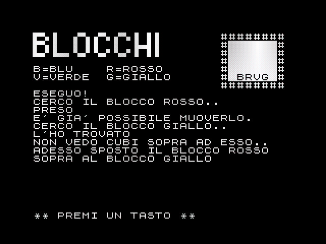

risorse | zx spectrum | blocchi
Si tratta di un programma che dovrebbe dimostrare una certa abilità nell'interpretazione del linguaggio naturale.
Il programma consente all'utente la manipolazione virtuale di un insieme di blocchi colorati. I blocchi si trovano in uno spazio bidimensionale, all'interno del quale possono essere impilati uno sull'altro oppure affiancati uno accanto all'altro. I blocchi sono rappresentati da una lettera che ne indica il colore: B=blu, G=giallo, R=rosso, V=verde. Durante l'esecuzione dei comandi impartiti, il programma descrive in maniera dettagliata le singole operazioni intraprese per raggiungere la configurazione desiderata.
Di seguito è riportato un esempio di utilizzo del programma:

Scarica il nastro virtuale blocchi.tzx (16KB).
10 REM
20 REM ********************
30 REM * INIZIALIZZAZIONE *
40 REM ********************
50 REM
60 DIM B$(20,20): DIM M$(5,6)
70 FOR X=1 TO 5
80 LET M$(X)=" "
90 NEXT X
100 LET M$(1,2 TO 5)="BRVG"
110 LET LIMDES=6: LET LIMSIN=1
120 LET FLAG=0: LET FL4=0: LET FL3=0: LET FL2=0: LET FL1=0
130 BORDER 0: PAPER 0: INK 7: BRIGHT 1: CLS : POKE 23658,8: GO SUB 2710: GO SUB 160: GO TO 1560
140 REM
150 REM *****************
160 REM * DISEGNA MONDO *
170 REM *****************
180 REM
190 CLS : POKE 23624,71: PRINT '"{+4}{-6}{-5} {+6}{-6}{-4}{-3}{+7}{+6}{-6}{-5} {+5}{+5}"'"{+4}{-6}{-5} {+5}{-5}{-5} {+5} {-5}{+3}{+5}{+5}"'"{+1}{+6}{-5}{+3}{+7}{-6}{+6}{-1}{+3}{-2}{-6}{+6}{-5} {+5}{+5}"''"B=BLU R=ROSSO"'"V=VERDE G=GIALLO"
200 PRINT AT 1,23;"########";: FOR F=5 TO 1 STEP -1:
210 PRINT AT ABS (F-6)+1,23;"#";: FOR N=1 TO 6: PRINT PAPER 7; INK 0;M$(F,N)+((CHR$ 8+" ") AND M$(F,N)="*");: NEXT N: PRINT "#"
220 NEXT N: NEXT F: PRINT OVER 1;AT 7, 23;"########"
230 RETURN
240 REM
250 REM ****************
260 REM * CERCA BLOCCO *
270 REM ****************
280 REM
290 IF FL2 THEN PRINT "CERCO IL BLOCCO ";: LET X$=C$: GO SUB 2690: PRINT ".."
300 LET L=1
310 LET C=1
320 IF M$(L,C)=C$ THEN GO TO 370
330 LET C=C+1: IF C<7 THEN GO TO 320
340 LET L=L+1: IF L<6 THEN GO TO 310
350 IF RND>.5 THEN PRINT "NON L'HO TROVATO..": RETURN
360 PRINT "QUESTO BLOCCO NON ESISTE.": RETURN
370 IF NOT FL2 THEN RETURN
380 LET A=RND: IF A>.8 THEN PRINT "ECCOLO!": RETURN
390 IF A>.6 THEN PRINT "L'HO TROVATO": RETURN
400 IF A>.2 THEN PRINT "TROVATO!": RETURN
410 PRINT "PRESO": RETURN
420 REM
430 REM **********************
440 REM * SPOSTAMENTO BLOCCO *
450 REM **********************
460 REM
470 LET FL2=FL3: GO SUB 260: LET FL2=0
480 IF L=6 AND C=7 THEN RETURN
490 LET A=RND: IF A>.75 THEN PRINT "ORA ";: GO TO 520
500 IF A>.5 THEN PRINT "ADESSO ";: GO TO 520
510 IF A>.25 THEN PRINT "LO STO SPOSTANDO..": GO TO 530
520 PRINT "LO SPOSTO"
530 LET COL=1+(LIMSIN=2)+INT (RND*(6-(LIMDES=5)))
540 IF NOT M$(1,COL)=" " THEN GO TO 590
550 LET M$(1,COL)=M$(L,C): LET M$(L,C)=" "
560 IF FL1 THEN PRINT "-DEVO FARLO PER FORZA-"
570 PRINT #0;"** PREMI UN TASTO **": PAUSE 0
580 GO SUB 160: RETURN
590 LET COL=COL+1
600 IF COL>LIMDES THEN LET COL=LIMSIN
610 GO TO 540
620 REM
630 REM **********************
640 REM * LIBERAMENTO BLOCCO *
650 REM **********************
660 REM
670 LET FL3=1: LET FL2=1: GO SUB 260: LET FL2=0
680 IF L=6 AND C=7 THEN RETURN
690 IF M$(L+1,C)=" " THEN LET A=RND: PRINT ("NON VEDO CUBI SOPRA AD ESSO.." AND A<=.33)+("..E' LIBERO" AND A>=.66)+("E' GIA' POSSIBILE MUOVERLO." AND A>.33 AND A<.66): LET FL3=0: RETURN
700 LET A=RND: IF A>.75 THEN PRINT "MI PREPARO A LIBERARLO..": GO TO 750
710 IF A>.5 THEN PRINT "PRIMA DI TUTTO DEVO LIBERARLO": GO TO 750
720 IF A>.25 THEN PRINT "ORA ";: GO TO 740
730 PRINT "ADESSO ";
740 PRINT "LO LIBERO.."
750 LET RIGA=5
760 IF M$(RIGA,C)<>C$ AND M$(RIGA,C)<>" " THEN LET S$=C$: LET L1=L: LET C1=C: LET C$=M$(RIGA,C): GO SUB 440: LET C$=S$: LET L=L1: LET C=C1
770 IF RIGA=L THEN LET FL3=0: RETURN
780 LET RIGA=RIGA-1
790 GO TO 760
800 REM
810 REM ********************
820 REM * BLOCCO SOPRA A.. *
830 REM ********************
840 REM
850 LET C$=D$: GO SUB 260: LET CD=C: LET LD=L: LET C$=E$: GO SUB 260: LET LE=L: LET CE=C: IF CD=CE AND LE=LD+1 THEN PRINT "SONO FORTUNATO!"'"NOTO CHE IL CUBO SOPRA AL BLOCCO": LET X$=D$: GO SUB 2690: PRINT " E' PROPRIO QUELLO ";: LET X$=E$: GO SUB 2690: PRINT #0;"** PREMI UN TASTO **": PAUSE 0: GO SUB 160: RETURN
860 LET C$=E$
870 GO SUB 640
880 LET C$=D$
890 GO SUB 640
900 LET C$=E$: GO SUB 260
910 LET L1=L: LET C1=C
920 LET C$=D$: GO SUB 260
930 PRINT ("ORA" AND A>.5)+("ADESSO" AND A<=.5);" SPOSTO IL BLOCCO ";: LET X$=E$: GO SUB 2690: PRINT : PRINT "SOPRA AL BLOCCO ";: LET X$=D$: GO SUB 2690: PRINT : LET M$(L+1,C)=M$(L1,C1): LET M$(L1,C1)=" ": PRINT #0;"** PREMI UN TASTO **": PAUSE 0: GO SUB 160
940 RETURN
950 REM
960 REM ********************
970 REM * BLOCCO SOTTO A.. *
980 REM ********************
990 REM
1000 LET C$=E$: GO SUB 260: LET CE=C: LET LE=L: LET C$=D$: GO SUB 260: LET CD=C: LET LD=L
1010 IF CD=CE AND LE+1=LD THEN PRINT "MA GUARDA CHE COMBINAZIONE!"'"IL CUBO ";: LET X$=E$: GO SUB 2690: PRINT " SI TROVA GIA'"'"SOTTO A QUELLO ";: LET X$=D$: GO SUB 2690: PRINT ''"NON E' CHE TU ABBIA"'"TENTATO DI FREGARMI !?": PRINT #0;"** PREMI UN TASTO **": PAUSE 0: GO SUB 160: RETURN
1020 LET C$=E$: GO SUB 640: LET C$=D$: GO SUB 640: LET CD=C: LET LD=L: LET C$=E$: GO SUB 260: LET CE=C: LET LE=L: LET C$=D$: LET FL3=1: GO SUB 440: LET FL3=0: GO SUB 260: LET LD1=L: LET CD1=C
1030 LET A=RND: PRINT ''("ADESSO " AND A>=.66)+("ORA " AND A<=.33)+("" AND A>.33 AND A<.66);"METTO IL BLOCCO ";: LET X$=E$: GO SUB 2690: PRINT '"DOVE HO VISTO IL CUBO ";: LET X$=D$: GO SUB 2690: LET M$(LD,CD)=E$: LET M$(LE,CE)=" ": PRINT #0;"** PREMI UN TASTO **": PAUSE 0: GO SUB 160
1040 LET A=RND: PRINT ("INFINE" AND A>=.66)+(CHR$ 8 AND A<=.33)+("FINALMENTE" AND A>.33 AND A<.66);" METTO IL CUBO ";: LET X$=D$: GO SUB 2690: PRINT '"SOPRA AL BLOCCO DI COLORE ";: LET X$=E$: GO SUB 2690: LET M$(LD1,CD1)=" ": LET M$(LD+1,CD)=D$
1050 PRINT #0;"** PREMI UN TASTO **": PAUSE 0: GO SUB 160: RETURN
1060 REM ****************
1070 REM * ACCANTO AL.. *
1080 REM ****************
1090 REM
1100 LET C$=D$: GO SUB 260: LET LD=L: LET CD=C: LET C$=E$: GO SUB 260: LET LE=L: LET CE=C: IF LD=LE AND CE=CD+DESTRA-NOT DESTRA THEN PRINT "CHE COINCIDENZA!"'"IL BLOCCO ";: LET X$=E$: GO SUB 2690: PRINT " SI TROVA"'"PROPRIO ALLA "+("DESTRA" AND DESTRA)+("SINISTRA" AND NOT DESTRA)'"DEL CUBO ";: LET X$=D$: GO SUB 2690: PRINT "..": PRINT #0;"** PREMI UN TASTO **": PAUSE 0: GO SUB 160: RETURN
1110 LET C$=D$: GO SUB 260
1120 IF L<>1 OR ((C=6 AND DESTRA) OR (C=1 AND NOT DESTRA)) THEN LET LIMDES=6-DESTRA: LET LIMSIN=1+NOT DESTRA: GO SUB 640: GO SUB 440: LET LIMSIN=1: LET LIMDES=6
1130 GO SUB 260: LET L2=L: LET C2=C
1140 LET C$=E$: GO SUB 640
1150 IF NOT M$(L2,C2+DESTRA-NOT DESTRA)=" " THEN LET C$=M$(L2,C2+DESTRA-NOT DESTRA): GO SUB 640: LET FL1=1: GO SUB 440: LET FL1=0
1160 LET C$=E$: GO SUB 260
1170 LET A=RND: PRINT ("FINALMENTE" AND A>.5)+("ORA" AND A<=.5);" AFFIANCO IL CUBO "': LET X$=E$: GO SUB 2690: PRINT " A "+("SINISTRA" AND NOT DESTRA)+("DESTRA" AND DESTRA)+" DEL CUBO ";: LET X$=D$: GO SUB 2690: LET M$(L2,C2+DESTRA-NOT DESTRA)=C$: LET M$(L,C)=" ": PRINT #0;"** PREMI UN TASTO **": PAUSE 0: GO SUB 160
1180 RETURN
1190 REM
1200 REM ****************
1210 REM * ISOLA BLOCCO *
1220 REM ****************
1230 REM
1240 GO SUB 260
1250 IF L<>1 THEN LET FL4=1: GO SUB 640: LET FL2=1: GO SUB 440
1260 IF C>1 THEN IF M$(L,C-1)<>" " THEN GO TO 1300
1270 IF C<6 THEN IF M$(L,C+1)<>" " THEN GO TO 1300
1280 IF M$(L+1,C)<>" " THEN GO TO 1300
1290 PRINT "NON DEVO FARE NIENTE!"'"IL BLOCCO ";: LET X$=C$: GO SUB 2690: PRINT " E' GIA' ISOLATO": PRINT #0;"** PREMI UN TASTO **": PAUSE 0: GO SUB 160: RETURN
1300 IF C>1 THEN IF M$(L,C-1)=" " THEN LET M$(L,C-1)="*"
1310 IF C<6 THEN IF M$(L,C+1)=" " THEN LET M$(L,C+1)="*"
1320 IF NOT FL4 THEN GO SUB 640
1330 LET FL4=0: LET K$=C$: IF C>1 THEN LET S$=M$(L,C-1): IF S$="B" OR S$="G" OR S$="R" OR S$="V" THEN LET C$=S$: GO SUB 640: GO SUB 440: LET C$=K$: GO SUB 260: LET M$(L,C-1)="*"
1340 IF C<6 THEN LET D$=M$(L,C+1): IF D$="B" OR D$="G" OR D$="R" OR D$="V" THEN LET C$=D$: GO SUB 640: GO SUB 440: LET C$=K$: GO SUB 260
1350 IF C>1 THEN IF M$(L,C-1)="*" THEN LET M$(L,C-1)=" "
1360 IF C<6 THEN IF M$(L,C+1)="*" THEN LET M$(L,C+1)=" "
1370 RETURN
1380 REM
1390 REM *******************
1400 REM * MESCOLA BLOCCHI *
1410 REM *******************
1420 REM
1430 PRINT "RIMESCOLO I BLOCCHI..": FOR Y=1 TO 5
1440 FOR X=1 TO 6
1450 LET M$(Y,X)=" "
1460 NEXT X
1470 NEXT Y
1480 LET CB=1+INT (RND*6)
1490 LET CG=1+INT (RND*6): IF CG=CB THEN GO TO 1490
1500 LET CR=1+INT (RND*6): IF CR=CG OR CR=CB THEN GO TO 1500
1510 LET CV=1+INT (RND*6): IF CV=CR OR CV=CG OR CV=CB THEN GO TO 1510
1520 LET M$(1,CB)="B": LET M$(1,CG)="G": LET M$(1,CR)="R": LET M$(1,CV)="V": PRINT #0;"** PREMI UN TASTO **": PAUSE 0
1530 GO SUB 160: RETURN
1540 REM
1550 REM ***********
1560 REM * COMANDO *
1570 REM ***********
1580 REM
1590 LET FL3=0: INPUT "COSA DEVO FARE, ORA ?"'LINE A$: LET A$=A$+" ": LET PAROLA=1
1600 IF A$=" " THEN GO TO 1590
1610 LET B$(PAROLA)=" ": IF A$="" THEN GO TO 1670
1620 IF A$(1)=" " THEN LET A$=A$(2 TO ): GO TO 1610
1630 FOR F=1 TO LEN A$: IF A$(F)=" " THEN GO TO 1660
1640 LET B$(PAROLA,F)=A$(F)
1650 NEXT F
1660 LET PAROLA=PAROLA+1: LET A$=A$(F TO ): IF PAROLA<15 THEN GO TO 1610
1670 LET V=1
1680 IF B$(V, TO 3)="VAI" OR B$(V, TO 3)="AND" THEN PRINT #0;"NON POSSO, VACCI TU!": PAUSE 250: GO TO 1560
1690 IF B$(V, TO 5)="SPOST" OR B$(V, TO 4)="MUOV" OR B$(V, TO 4)="METT" OR B$(V, TO 8)="TRASPORT" OR B$(V, TO 4)="PORT" THEN GO TO 1860
1700 IF B$(V, TO 6)="MESCOL" OR B$(V, TO 8)="RIMESCOL" THEN GO TO 2030
1710 IF B$(V, TO 6)="RIPART" OR B$(V, TO 9)="RICOMINCI" THEN RUN
1720 IF B$(V, TO 3)="VED" OR B$(V, TO 7)="ILLUSTR" OR B$(V, TO 5)="MOSTR" OR B$(V, TO 7)="DESCRIV" THEN GO TO 2120
1730 IF B$(V, TO 5)="ESIST" OR B$(V, TO 4)="C'E'" THEN GO TO 2480
1740 IF B$(V, TO 4)="ISOL" OR B$(V, TO 5)="SEPAR" THEN GO TO 2330
1750 IF B$(V, TO 2)="E'" OR B$(V, TO 6)="DOV'E'" OR B$(V, TO 4)="TROV" OR B$(V, TO 2)="ST" OR B$(V, TO 4)="CERC" OR B$(V, TO 6)="RICERC" THEN GO TO 2360
1760 IF B$(V, TO 7)="REGISTR" OR B$(V, TO 5)="SALVA" THEN PRINT "O.K."'"QUANDO SEI PRONTO PREMI UN TASTO": PAUSE 0: SAVE "BLOCCHI"LINE 10: PRINT ''"VERIFICO LA REGISTRAZIONE..": VERIFY "": GO SUB 160: GO TO 1560
1770 IF B$(V, TO 4)="FERM" OR B$(V, TO 6)="NIENTE" OR B$(V, TO 5)="NULLA" OR B$(V, TO 5)="BASTA" THEN PRINT "COME VUOI.."''"PASSO IL CONTROLLO"'"AL SISTEMA OPERATIVO."'''"CIAO, ";H$: STOP
1780 IF B$(V, TO 5)="SALUT" OR B$(V, TO 4)="CIAO" OR B$(V, TO 11)="ARRIVEDERCI" THEN PRINT "COSI' PRESTO ?"'"VA BENE, RESTITUISCO IL"'"CONTROLLO AL BASIC.."''''"E' STATO UN PIACERE POTER "'"LAVORARE CON TE!!"''" CIAO, ";H$: STOP
1790 LET V=V+1: IF V< PAROLA THEN GO TO 1680
1800 PRINT #0;AT 0,0;" NON CONOSCO IL VERBO CHE HAI"'" USATO. PROVA CON UN SINONIMO": PAUSE 250: GO TO 1560
1810 REM
1820 REM ******************
1830 REM * SPOSTA IL CUBO *
1840 REM ******************
1850 REM
1860 LET Q=V: GO SUB 2570
1870 LET W=Q: GO SUB 2660: LET FLAG=1: LET A=RND
1880 LET E$=B$(W,1)
1890 GO SUB 2570: GO SUB 2660
1900 LET D$=B$(W,1): IF E$=D$ THEN LET A=RND: PRINT #0;AT 0,0;("MI STAI PRENDENDO IN GIRO ?" AND A>.5)+("HO SOLO UN CUBO DI COLORE "+(E$+("LU" AND E$="B")+("IALLO" AND E$="G")+("OSSO" AND E$="R")+("ERDE" AND E$="V")) AND A<=.5): PAUSE 250: GO TO 1560
1910 LET V=V+1
1920 IF B$(V, TO 3)="SU " OR B$(V, TO 3)="SUL" OR B$(V, TO 5)="SOPRA" THEN PRINT ("ESEGUO!" AND A<.33)+("CI PROVO" AND A>=.33 AND A<=.66)+("BENE!" AND A>.66): GO SUB 850: GO TO 1560
1930 IF B$(V, TO 5)="SOTTO" THEN PRINT ("ESEGUO!" AND A<.33)+("CI PROVO" AND A>=.33 AND A<=.66)+("BENE!" AND A>.66): GO SUB 970: GO TO 1560
1940 IF B$(V, TO 6)="DESTRA" THEN LET DESTRA=1: PRINT ("VA BENE" AND A>.5)+("O.K." AND A<=.5): GO SUB 1100: GO TO 1560
1950 IF B$(V, TO 8)="SINISTRA" THEN LET DESTRA=0: PRINT ("COME VUOI.." AND A>.5)+("VEDIAMO.." AND A<=.5): GO SUB 1100: GO TO 1560
1960 LET V=V+1: IF V< PAROLA THEN GO TO 1920
1970 PRINT #0;"MI SPIACE, NON HO CAPITO DOVE"'"VUOI METTERE IL BLOCCO ";E$+("LU" AND E$="B")+("IALLO" AND E$="G")+("OSSO" AND E$="R")+("ERDE" AND E$="V"): PAUSE 250: GO TO 1560
1980 REM
1990 REM *************
2000 REM * RIMESCOLA *
2010 REM *************
2020 REM
2030 LET V=V+1
2040 IF B$(V, TO 7)="BLOCCHI" OR B$(V, TO 4)="CUBI" OR B$(V, TO 7)="OGGETTI" THEN PRINT "VA BENE..": GO SUB 1430: GO TO 1560
2050 LET V=V+1: IF V< PAROLA THEN GO TO 2040
2060 PRINT #0;AT 0,0;" NON RIESCO A CAPIRE COSA TU"'" MI VOGLIA FAR RIMESCOLARE..": PAUSE 250: GO TO 1560
2070 REM
2080 REM ***********************
2090 REM * DESCRIVE SITUAZIONE *
2100 REM ***********************
2110 REM
2120 LET V=V+1
2130 IF B$(V, TO 6)="BLOCCO" OR B$(V, TO 4)="CUBO" THEN GO TO 2390
2140 LET V=V+1: IF V< PAROLA THEN GO TO 2130
2150 PRINT "PARTENDO DA SINISTRA,IL PRIMO"'"CUBO CHE TROVO E' QUELLO ";
2160 LET BLOC=0: FOR V=1 TO 6: IF M$(1,V)=" " THEN NEXT V: GO TO 2470
2170 LET BLOC=BLOC +1
2180 LET A=RND: IF BLOC >1 THEN PRINT ("POI TROVO" AND BLOC=2)+("QUINDI VEDO" AND BLOC=3)+("INFINE SCORGO" AND BLOC=4)+" IL "+("BLOCCO " AND A>.5)+("CUBO " AND A<=.5);
2190 LET X$=M$(1,V): GO SUB 2690: PRINT '
2200 IF M$(2,V)=" " THEN NEXT V: GO TO 2470
2210 PRINT "SOPRA SI TROVA IL BLOCCO ";: LET X$=M$(2,V): GO SUB 2690: PRINT : LET BLOC =BLOC+1
2220 IF M$(3,V)=" " THEN NEXT V: GO TO 2470
2230 PRINT "PIU' SOPRA C'E' QUELLO ";: LET BLOC=BLOC+1
2240 LET X$=M$(3,V): GO SUB 2690: PRINT
2250 IF M$(4,V)=" " THEN NEXT V: GO TO 2470
2260 PRINT "LA PILA TERMINA COL CUBO ";: LET X$=M$(4,V): GO SUB 2690: PRINT '''"TUTTI I BLOCCHI SONO"'"POSTI UNO SOPRA L'ALTRO!": GO TO 2470
2270 REM
2280 REM ****************
2290 REM * ISOLA BLOCCO *
2300 REM ****************
2310 REM
2320 LET V=V+1
2330 LET Q=V: GO SUB 2570: LET W=Q: GO SUB 2660: LET C$=B$(W,1): PRINT "COME VUOI.": GO SUB 1210: GO TO 1560
2340 REM
2350 REM ****************
2360 REM * CERCA BLOCCO *
2370 REM ****************
2380 REM
2390 LET W=V: GO SUB 2660: LET C$=B$(W,1): LET FL2=0: GO SUB 260: LET FL2=1
2400 IF L=6 AND C=7 THEN GO TO 1560
2410 PRINT "IL CUBO ";: LET X$=C$: GO SUB 2690: PRINT " SI TROVA SULLA "'+("PRIMA" AND C=1)+("SECONDA" AND C=2)+("TERZA" AND C=3)+("QUARTA" AND C=4)+("QUINTA" AND C=5)+("SESTA" AND C=6)+" COLONNA DA SINISTRA,"
2420 PRINT ("PRIMA" AND L=1)+("SECONDA" AND L=2)+("TERZA" AND L=3)+("QUARTA" AND L=4)+("QUINTA" AND L=5)+" LINEA PARTENDO DAL BASSO"
2430 IF C>1 THEN IF M$(L,C-1)<>" " THEN PRINT "A SINISTRA C'E' IL CUBO ";: LET X$=M$(L,C-1): GO SUB 2690: PRINT
2440 IF C<6 THEN IF M$(L,C+1)<>" " THEN PRINT "A DESTRA VEDO IL CUBO ";: LET X$=M$(L,C+1): GO SUB 2690: PRINT
2450 IF M$(L+1,C)<>" " THEN PRINT "SOPRA E' POSTO IL BLOCCO ";: LET X$=M$(L+1,C): GO SUB 2690: PRINT
2460 IF L>1 THEN IF M$(L-1,C)<>" " THEN PRINT "SOTTO SI TROVA IL CUBO ";: LET X$=M$(L-1,C): GO SUB 2690: PRINT
2470 PRINT : PRINT "E' TUTTO..":: PRINT #0;"** PREMI UN TASTO **": PAUSE 0: GO SUB 160: GO TO 1560
2480 LET Q=V: GO SUB 2570: LET W=Q: GO SUB 2660: LET A=RND
2490 PRINT ("SI', EFFETTIVAMENTE ESISTE" AND A<.25)+("E' VERO, RIESCO A VEDERE" AND A>=.25 AND A<.5)+("IN EFFETTI NEL MIO MONDO C'E'" AND A>=.5 AND A<.75)+("ECCOLO, VEDO PROPRIO" AND A>=.75)'"UN BLOCCO COLORATO DI ";: LET X$=B$(W,1): GO SUB 2690: PRINT : INPUT "VUOI SAPERE DOVE SI TROVA >";LINE R$
2500 IF R$="SI" THEN LET C$=X$: GO TO 2360
2510 GO SUB 160: GO TO 1560
2520 REM
2530 REM **********************
2540 REM * CONTROLLO SINTASSI *
2550 REM **********************
2560 REM
2570 LET Q=Q+1
2580 IF B$(Q, TO 6)="BLOCCO" OR B$(Q, TO 4)="CUBO" OR (B$(Q, TO 6)="QUELLO" AND FLAG) THEN RETURN
2590 IF Q< PAROLA THEN GO TO 2570
2600 PRINT #0;AT 0,0;" NON SO A COSA TU TI STIA"'" RIFERENDO. SII PIU' CHIARO": PAUSE 250: GO TO 1560
2610 REM
2620 REM ********************
2630 REM * CONTROLLO COLORE *
2640 REM ********************
2650 REM
2660 LET W=W+1: IF B$(W, TO 3)="BLU" OR B$(W, TO 6)="GIALLO" OR B$(W, TO 5)="ROSSO" OR B$(W, TO 5)="VERDE" THEN RETURN
2670 IF W< PAROLA THEN GO TO 2660
2680 PRINT #0;AT 0,0; "NON RIESCO A TROVARE"'"IL CUBO DI CUI HAI PARLATO": PAUSE 250: GO TO 1560
2690 PRINT X$+("LU" AND X$="B")+("IALLO" AND X$="G")+("OSSO" AND X$="R")+("ERDE" AND X$="V");: RETURN
2700 REM
2710 REM *****************
2720 REM * PRESENTAZIONE *
2730 REM *****************
2740 REM
2750 CLS : POKE 23624,71: PRINT '" {+4}{-6}{-5} {+6}{-6}{-4}{-3}{+7}{+6}{-6}{-5} {+5}{+5}"'" {+4}{-6}{-5} {+5}{-5}{-5} {+5} {-5}{+3}{+5}{+5} {(C)} 1987 by"'" {+1}{+6}{-5}{+3}{+7}{-6}{+6}{-1}{+3}{-2}{-6}{+6}{-5} {+5}{+5} ZULIANI G."
2760 PRINT ''"CIAO, IO SONO LO SPECTRUM...": INPUT "COME TI CHIAMI ? ";LINE H$
2770 PRINT '"SALVE, ": LET H$=H$+" ! ": LET H$=H$( TO 32): FOR F=1 TO 24: PRINT AT 8,31-F;H$(1 TO F): NEXT F: LET F=1
2780 IF H$(F)="!" THEN LET H$=H$( TO F): GO TO 2800
2790 LET F=F+1: GO TO 2780
2800 PRINT '"LO SCOPO DI QUESTO PROGRAMMA E'"'"DI FARMI APPARIRE INTELLIGENTE!"''"SE AVRAI L'IMPRESSIONE DI AVERE"'"A CHE FARE CON QUALCOSA CHE"'"CAPISCA QUELLO CHE TU GLI DICI,"'"E INOLTRE AGISCA DI CONSEGUENZA,"
2810 PRINT "ALLORA IL SOFTWARE POTRA' ESSERE"'"CONSIDERATO UN ESEMPIO DI A.I."'"(ARTIFICIAL INTELLIGENCE)"
2820 PRINT #0;AT 0,0;"* PREMI UN TASTO *": PAUSE 0
2830 FOR F=6 TO 21: PRINT AT F,0,,: NEXT F: PRINT AT 6,0;
2840 PRINT "PER MEZZO DELLA TASTIERA,"'"UTILIZZANDO FRASI IN ITALIANO,"'"NON ECCESSIVAMENTE COMPLESSE,"'"MI DIRAI QUALI OPERAZIONI DOVRO'"'"COMPIERE SU ALCUNI CUBI COLORATI"'"(SPOSTAMENTI,RICERCHE,ECCETERA)."
2850 PRINT '''"FAMMI UN FAVORE, ";H$
2860 PRINT AT 17,0;" SE PER CASO GIANFRANCO TI"'" DOVESSE CHIEDERE UN PARERE,"'" DIGLI CHE TI SONO SEMBRATO"'" MOLTO INTELLIGENTE... GRAZIE"
2870 PLOT 14,6: DRAW 0,36: DRAW 228,0: DRAW 0,-36: DRAW -228,0: PLOT 12,4: DRAW 0,40: DRAW 232,0: DRAW 0,-40: DRAW -232,0: PAUSE 0: CLS : RETURN
Pagina modificata l'8/11/2011